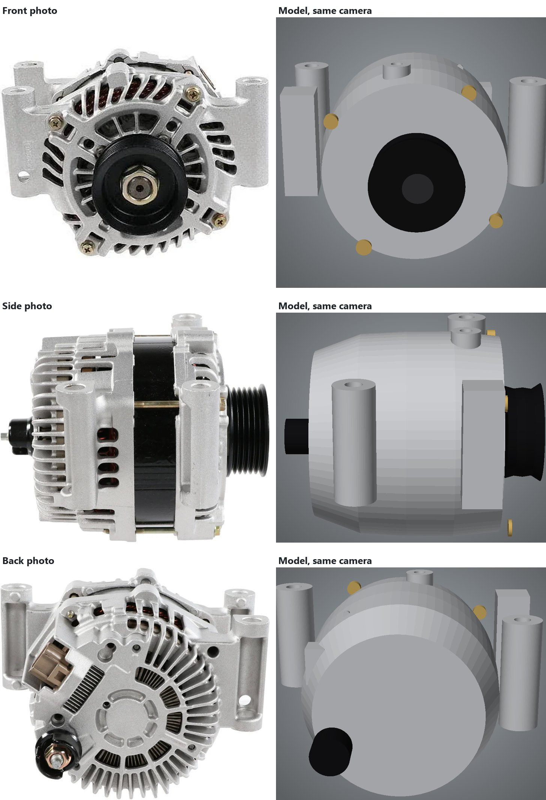

The second attempt started over with clean geometry: cylinders, boxes, turned profiles and holes, each with real dimensions. Claude, Anthropic's AI model working as a coding agent, built it as a fully automatic pipeline. Give it any three photos and it works out the cameras, the scale and the parts on its own, using local AI models and a fitting program.
Loading model…

A clean model is only as good as the cameras it's compared through. First up was a local vision-language model, Qwen3.8-Flash-Next. On a single photo it could point at features to within about 4 pixels, but it could not reliably match the same feature across two photos. That's the step that turns flat pictures into geometry, so this was a dead end.
VGGT, a 3-D vision model from Meta running locally, solved it in seconds. It placed the three cameras within 3–7° of the cameras Claude had solved earlier from landmark points, and recovered a rough point cloud of every surface the photos show.
The overall size came out at 187 × 142 × 176 mm with no measurement given, against the final model's 187 × 131 × 182 mm. The outline match is respectable at 93.9 %, and the depth error is low because a smooth envelope can sit close to the surfaces the cameras saw. But it reproduces only 16 % of the edges in the photos: there are no cooling fins, no vent windows and no castings. One mounting ear came out as a plain block. A review round, where the local model looked at its own result and revised its parts list, changed almost nothing.
The hard geometry problem was solved: where each photo was taken from, and how big the part is. What was missing was a designer who knows how an alternator is built and a strict check of every change against the photos. That is chapter 3.
All three models, scored by the same program against the same three photos. Each figure is the average of the front, side and back photo.
| Model | Outline match | Edges matched | Edge precision | Depth error | Triangles |
|---|---|---|---|---|---|
| 1 · Melted | 94.2 % | 58 % | 60 % | 3.45 mm | 140,000 |
| 2 · Simple shapes | 93.9 % | 16 % | 52 % | 2.49 mm | 5,180 |
| 3 · Measured | 96.2 % | 61 % | 68 % | 2.43 mm | 61,888 |